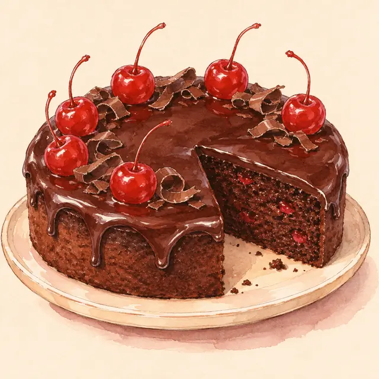
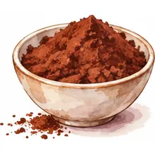
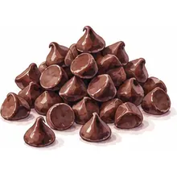
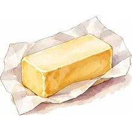
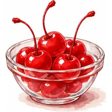
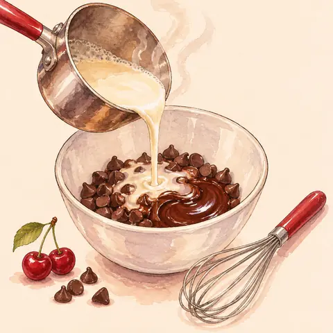

Dark chocolate, maraschino cherries, glossy ganache

Almond flour instead of wheat, so it’s naturally gluten-free.

Cocoa powder
Chocolate chips
Butter
Maraschino cherriesOne 8-inch round pan, an electric mixer and a gentle hand with the spatula.
Just chocolate and hot cream, spread over the completely cooled cake.

Store the finished cake in an airtight container in the refrigerator.
Remove it from the refrigerator 45–60 minutes before serving so the chocolate, butter, and ganache soften.
Optionally with vanilla ice cream.
Refrigerate leftovers within two hours.
Soft, moist, rich, and slightly fudgy.